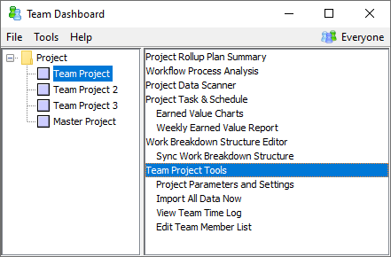

Invite Team Members to Join Team Project (Team Leader)
The dashboard takes a wholistic view of team and personal data. It
assumes that teams and individuals will participate in many projects,
and that these many-to-many relationships will change over time. So
to establish these relationships, each team member must "join" the
team project.
After creating a team project, the team leader should invite all
team members to join the new project. For teams using the dashboard
for the first time, it is wise to perform this step before the project
launch. Joining the project helps to ensure that everyone has
successfully installed the software, and that no network communication
problems exist. Performing this step before the launch gives you time
to work through any problems that might arise.
Before following the instructions below, you must have already
(a) installed the Team Dashboard, and
(b) created a team project.
- If the Team Dashboard
is not already running, start it using the appropriately named
shortcut on the team leader's computer.
- In the Team Dashboard window, select the
appropriate team project from the tree on the left. Then select the
the "Team Project Tools" option from the list that appears on the right.

- Scroll to the bottom of the page, and find the
section called "Joining Team Members to the Project." Use one of the listed
approaches to invite team members to join.
If you decide to use the "hyperlink" joining approach, leave the Team
Dashboard program running while team members join. The hyperlink approach may
not work in some organizations, if network configuration or firewalls block
peer-to-peer communications. If your team members receive a "Server Not
Found" or similar error, use the "invitation file" approach instead.
- As the team leader, you could very
possibly perform some tasks in support of project work. If so, you too
should personally follow the steps to join the project. To do this,
complete the following:
- Launch your personal Process Dashboard dataset and
leave it running
- Point your Web browser at the same hyperlink (described above) that
your team members are using to join the project.